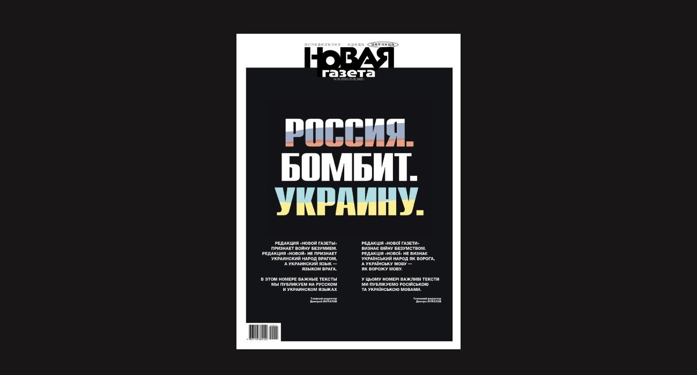

Selected Items
The following are the 11 selected items chosen for the domain of study on Russian censorship policy enacted in 2022.
Russo-Ukrainian war
The armed conflict between Russia and Ukraine that began in 2014 and escalated into a full-scale invasion on 24 February 2022, directly triggering the adoption of Russia's war censorship laws.
Federal Law No. 32-FZ of 4 March 2022
Federal law introducing criminal liability for disseminating "false information" about the Russian Armed Forces, with penalties of up to 15 years imprisonment; the primary legal instrument of Russia's war censorship regime.

03Novaya Gazeta
Independent Russian newspaper forced to suspend publication in March 2022 after receiving warnings from Roskomnadzor under the new censorship laws; its media licence was revoked in September 2022.
Marina Ovsyannikova
Russian journalist and former Channel One editor who interrupted a live state television broadcast on 14 March 2022 holding an anti-war sign, becoming an international symbol of dissent; subsequently sentenced to 8.5 years in absentia in October 2023.
Amnesty International Report
Official statement by Amnesty International condemning the Russian authorities' crackdown on independent media and anti-war protesters, urging repeal of the laws adopted on 4 March 2022.
Bucha massacre
The mass killing of Ukrainian civilians by Russian forces during the occupation of Bucha, evidence of which emerged on 1 April 2022 — a trigger for criminal cases under the fakes law against those who reported on the atrocities.
OVD-Info
Independent Russian human rights media project monitoring political persecution, which documented over 10,000 prosecutions under the 2022 war censorship laws and provided legal assistance to those charged.
Roskomnadzor
Russia's federal media regulator responsible for enforcing the 2022 censorship laws, including blocking news websites, issuing warnings to media outlets, and overseeing the mass exodus of independent Russian media.
 09
09
ECHR ruling
Judgment by the European Court of Human Rights finding that Russia's war censorship laws violated the European Convention on Human Rights, marking the first international legal ruling against the legislation.
Alexei Gorinov
Moscow municipal deputy who became the first person sentenced to imprisonment under Article 207.3 of the Criminal Code, receiving a seven-year prison term in July 2022 for calling Russia's invasion of Ukraine a "war" at a council meeting.
Vladimir Kara-Murza
Russian-British opposition politician sentenced to 25 years in prison in April 2023 for his speech to the Arizona House of Representatives criticising the invasion — the harshest sentence handed to a political opponent since the start of the war.